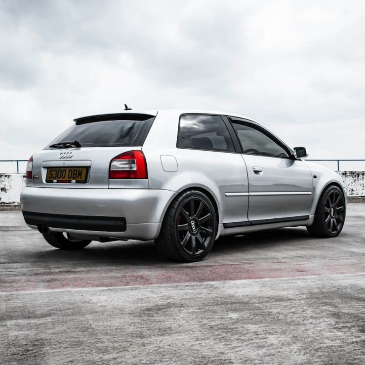
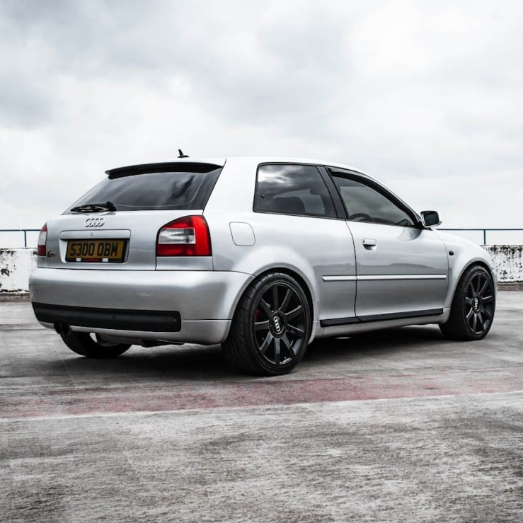

Velocidad máxima: 243km/h
0-100 km/h: 6.6s
Potencia máxima: 224cv
Longitud: 4159mm
Anchura: 1763mm
Altura: 1415mm
Batalla: 2519mm
Peso: 1420kg
La primera generación del S3 (denominada 8L) tuvo un restyling y una mejora del motor en 2002, este poseía un motor cuatro cilindros y 20 válvulas de 1.8 litros sobrealimentado capaz de alcanzar los 224cv y 280Nm de par, a difrencia de los 210cv y 270Nm de par que entregaban los primeros modelos. El bloque se asociaba a un cambio manual de seis velocidades conectado a un sistema de tracción total quattro.
Con respecto al A3, el interior y los paragolpes eran más deportivos, las llantas eran de 17 pulgadas y tenía doble salida de escape. Además, este se lanza únicamente en carrocería de tres puertas.